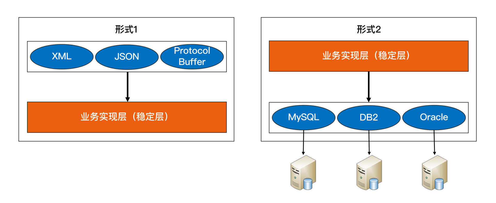
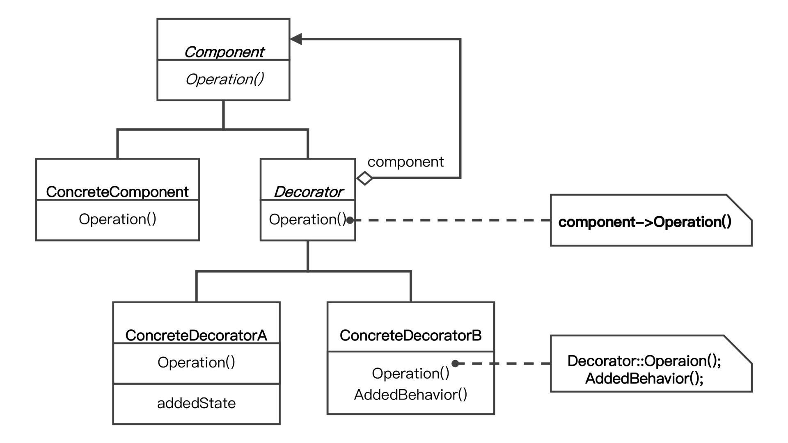

- 00 开篇词 照着做，你也能成为架构师！.md.html
- 01 架构到底是指什么？.md.html
- 02 架构设计的历史背景.md.html
- 03 架构设计的目的.md.html
- 04 复杂度来源：高性能.md.html
- 05 复杂度来源：高可用.md.html
- 06 复杂度来源：可扩展性.md.html
- 07 复杂度来源：低成本、安全、规模.md.html
- 08 架构设计三原则.md.html
- 09 架构设计原则案例.md.html
- 10 架构设计流程：识别复杂度.md.html
- 11 架构设计流程：设计备选方案.md.html
- 12 架构设计流程：评估和选择备选方案.md.html
- 13 架构设计流程：详细方案设计.md.html
- 14 高性能数据库集群：读写分离.md.html
- 15 高性能数据库集群：分库分表.md.html
- 16 高性能NoSQL.md.html
- 17 高性能缓存架构.md.html
- 18 单服务器高性能模式：PPC与TPC.md.html
- 19 单服务器高性能模式：Reactor与Proactor.md.html
- 20 高性能负载均衡：分类及架构.md.html
- 21 高性能负载均衡：算法.md.html
- 22 想成为架构师，你必须知道CAP理论.md.html
- 23 想成为架构师，你必须掌握的CAP细节.md.html
- 24 FMEA方法，排除架构可用性隐患的利器.md.html
- 25 高可用存储架构：双机架构.md.html
- 26 高可用存储架构：集群和分区.md.html
- 27 如何设计计算高可用架构？.md.html
- 28 业务高可用的保障：异地多活架构.md.html
- 29 异地多活设计4大技巧.md.html
- 30 异地多活设计4步走.md.html
- 31 如何应对接口级的故障？.md.html
- 32 可扩展架构的基本思想和模式.md.html
- 33 传统的可扩展架构模式：分层架构和SOA.md.html
- 34 深入理解微服务架构：银弹 or 焦油坑？.md.html
- 35 微服务架构最佳实践 - 方法篇.md.html
- 36 微服务架构最佳实践 - 基础设施篇.md.html
- 37 微内核架构详解.md.html
- 38 架构师应该如何判断技术演进的方向？.md.html
- 39 互联网技术演进的模式.md.html
- 40 互联网架构模板：存储层技术.md.html
- 41 互联网架构模板：开发层和服务层技术.md.html
- 42 互联网架构模板：网络层技术.md.html
- 43 互联网架构模板：用户层和业务层技术.md.html
- 44 互联网架构模板：平台技术.md.html
- 45 架构重构内功心法第一式：有的放矢.md.html
- 46 架构重构内功心法第二式：合纵连横.md.html
- 47 架构重构内功心法第三式：运筹帷幄.md.html
- 48 再谈开源项目：如何选择、使用以及二次开发？.md.html
- 49 谈谈App架构的演进.md.html
- 50 架构实战：架构设计文档模板.md.html
- 51 如何画出优秀的软件系统架构图？.md.html
- 加餐｜业务架构实战营开营了.md.html
- 加餐｜单服务器高性能模式性能对比.md.html
- 加餐｜扒一扒中台皇帝的外衣.md.html
- 如何高效地学习开源项目 华仔，放学别走！ 第3期.md.html
- 新书首发 《从零开始学架构》.md.html
- 架构专栏特别放送 华仔，放学别走！ 第2期.md.html
- 架构专栏特别放送 华仔，放学别走！第1期.md.html
- 架构师必读书单 华仔，放学别走！ 第5期.md.html
- 架构师成长之路 华仔，放学别走！ 第4期.md.html
- 结束语 坚持，成就你的技术梦想.md.html
- 捐赠
06 复杂度来源：可扩展性
你好，我是华仔。复杂度来源前面已经讲了高性能和高可用，今天我们来聊聊可扩展性。
可扩展性是指，系统为了应对将来需求变化而提供的一种扩展能力，当有新的需求出现时，系统不需要或者仅需要少量修改就可以支持，无须整个系统重构或者重建。
由于软件系统固有的多变性，新的需求总会不断提出来，因此可扩展性显得尤其重要。在软件开发领域，面向对象思想的提出，就是为了解决可扩展性带来的问题；后来的设计模式，更是将可扩展性做到了极致。得益于设计模式的巨大影响力，几乎所有的技术人员对于可扩展性都特别重视。
设计具备良好可扩展性的系统，有两个基本条件：
- 正确预测变化
- 完美应对变化
但要达成这两个条件，本身也是一件复杂的事情，我来具体分析一下。
预测变化
软件系统与硬件或者建筑相比，有一个很大的差异：软件系统在发布后，还可以不断地修改和演进。
这就意味着不断有新的需求需要实现。
如果新需求能够少改代码甚至不改代码就可以实现，那当然是皆大欢喜的，否则来一个需求就要求系统大改一次，成本会非常高，程序员心里也不爽（改来改去），产品经理也不爽（做得那么慢），老板也不爽（那么多人就只能干这么点事）。
因此作为架构师，我们总是试图去预测所有的变化，然后设计完美的方案来应对。当下一次需求真正来临时，架构师可以自豪地说：“这个我当时已经预测到了，架构已经完美地支持，只需要一两天工作量就可以了！”
然而理想是美好的，现实却是复杂的。有一句谚语：“唯一不变的是变化。”如果按照这个标准去衡量，架构师每个设计方案都要考虑可扩展性，例如：
- 架构师准备设计一个简单的后台管理系统，当架构师考虑用MySQL存储数据时，是否要考虑后续需要用Oracle来存储？
- 当架构师设计用HTTP做接口协议时，是否要考虑要不要支持ProtocolBuffer？
- 甚至更离谱一点，架构师是否要考虑VR技术对架构的影响从而提前做好可扩展性？
如果每个点都考虑可扩展性，架构师会不堪重负，架构设计也会异常庞大且最终无法落地。但架构师也不能完全不做预测，否则可能系统刚上线，马上来新的需求就需要重构，这同样意味着前期很多投入的工作量也白费了。
同时，“预测”这个词，本身就暗示了不可能每次预测都是准确的。如果预测的事情出错，我们期望中的需求迟迟不来，甚至被明确否定，那么基于预测做的架构设计就没什么作用，投入的工作量也就白费了。
综合分析，预测变化的复杂性在于：
- 不能每个设计点都考虑可扩展性。
- 不能完全不考虑可扩展性。
- 所有的预测都存在出错的可能性。
对于架构师来说，如何把握预测的程度和提升预测结果的准确性，是一件很复杂的事情，而且没有通用的标准可以简单套上去，更多是靠自己的经验、直觉。所以架构设计评审的时候，经常会出现两个设计师对某个判断争得面红耳赤的情况，原因就在于没有明确标准，不同的人理解和判断有偏差，而最终又只能选择其中一个判断。
2年法则
那么我们设计架构的时候要怎么办呢？根据以往的职业经历和思考，我提炼出一个“2年法则”供你参考：只预测2年内的可能变化，不要试图预测5年甚至10年后的变化。
当然，你可能会有疑问：为什么一定是2年呢？有的行业变化快，有的行业变化慢，不应该是按照行业特点来选择具体的预测周期吗？
理论上来说确实如此，但实际操作的时候你会发现，如果你要给出一个让大家都信服的行业预测周期，其实是很难的。
我之所以说要预测2年，是因为变化快的行业，你能够预测2年已经足够了；而变化慢的行业，本身就变化慢，预测本身的意义不大，预测5年和预测2年的结果是差不多的。所以“2年法则”在大部分场景下都是适用的。
应对变化
假设架构师经验非常丰富，目光非常敏锐，看问题非常准，所有的变化都能准确预测，是否意味着可扩展性就很容易实现了呢？也没那么理想！因为预测变化是一回事，采取什么方案来应对变化，又是另外一个复杂的事情。即使预测很准确，如果方案不合适，则系统扩展一样很麻烦。
方案一：提炼出“变化层”和“稳定层”
第一种应对变化的常见方案是：将不变的部分封装在一个独立的“稳定层”，将“变化”封装在一个“变化层”（也叫“适配层”）。这种方案的核心思想是通过变化层来隔离变化。

无论是变化层依赖稳定层，还是稳定层依赖变化层都是可以的，需要根据具体业务情况来设计。
如果系统需要支持XML、JSON、ProtocolBuffer三种接入方式，那么最终的架构就是“形式1”架构；如果系统需要支持MySQL、Oracle、DB2数据库存储，那么最终的架构就变成了“形式2”的架构了。

无论采取哪种形式，通过剥离变化层和稳定层的方式应对变化，都会带来两个主要的复杂性相关的问题。
- 变化层和稳定层如何拆分？
对于哪些属于变化层，哪些属于稳定层，很多时候并不是像前面的示例（不同接口协议或者不同数据库）那样明确，不同的人有不同的理解，导致架构设计评审的时候可能吵翻天。
- 变化层和稳定层之间的接口如何设计？
对于稳定层来说，接口肯定是越稳定越好；但对于变化层来说，在有差异的多个实现方式中找出共同点，并且还要保证当加入新的功能时，原有的接口不需要太大修改，这是一件很复杂的事情，所以接口设计同样至关重要。
例如，MySQL的REPLACE INTO和Oracle的MERGE INTO语法和功能有一些差异，那么存储层如何向稳定层提供数据访问接口呢？是采取MySQL的方式，还是采取Oracle的方式，还是自适应判断？如果再考虑DB2的情况呢？
看到这里，相信你已经能够大致体会到接口设计的复杂性了。
方案二：提炼出“抽象层”和“实现层”
第二种常见的应对变化的方案是：提炼出一个“抽象层”和一个“实现层”。如果说方案一的核心思想是通过变化层来隔离变化，那么方案二的核心思想就是通过实现层来封装变化。
因为抽象层的接口是稳定的不变的，我们可以基于抽象层的接口来实现统一的处理规则，而实现层可以根据具体业务需求定制开发不同的实现细节，所以当加入新的功能时，只要遵循处理规则然后修改实现层，增加新的实现细节就可以了，无须修改抽象层。
方案二典型的实践就是设计模式和规则引擎。考虑到绝大部分技术人员对设计模式都非常熟悉，我以设计模式为例来说明这种方案的复杂性。
下面是设计模式的“装饰者”模式的类关系图。

图中的Component和Decorator就是抽象出来的规则，这个规则包括几部分：
- Component和Decorator类。
- Decorator类继承Component类。
- Decorator类聚合了Component类。
这个规则一旦抽象出来后就固定了，不能轻易修改。例如，把规则3去掉，就无法实现装饰者模式的目的了。
装饰者模式相比传统的继承来实现功能，确实灵活很多。例如，《设计模式》中装饰者模式的样例“TextView”类的实现，用了装饰者之后，能够灵活地给TextView增加额外更多功能，包括可以增加边框、滚动条和背景图片等。这些功能上的组合不影响规则，只需要按照规则实现即可。
但装饰者模式相对普通的类实现模式，明显要复杂多了。本来一个函数或者一个类就能搞定的事情，现在要拆分成多个类，而且多个类之间必须按照装饰者模式来设计和调用。
规则引擎和设计模式类似，都是通过灵活的设计来达到可扩展的目的，但“灵活的设计”本身就是一件复杂的事情，不说别的，光是把23种设计模式全部理解和备注，都是一件很困难的事情。
1写2抄3重构原则
那么，我们在实际工作中具体如何来应对变化呢？Martin Fowler在他的经典书籍《重构》中给出一个“Rule of three”的原则，原文是“Three Strikes And You Refactor”，中文一般翻译为“事不过三，三则重构”。
而我将其翻译为“1写2抄3重构”，也就是说你不要一开始就考虑复杂的可扩展性应对方法，而是等到第三次遇到类似的实现的时候再来重构，重构的时候采取隔离或者封装的方案。
举个最简单的例子，假设你们的创新业务要对接第三方钱包，按照这个原则，就可以这样做：
- 1写：最开始你们选择了微信钱包对接，此时不需要考虑太多可扩展性，直接快速对照微信支付的API对接即可，因为业务是否能做起来还不确定。
- 2抄：后来你们发现业务发展不错，决定要接入支付宝，此时还是可以不考虑可扩展，直接把原来微信支付接入的代码拷贝过来，然后对照支付宝的API，快速修改上线。
- 3重构：因为业务发展不错，为了方便更多用户，你们决定接入银联云闪付，此时就需要考虑重构，参考设计模式的模板方法和策略模式将支付对接的功能进行封装。
小结
今天我从预测变化和应对变化这两个设计可扩展性系统的条件，以及它们实现起来本身的复杂性，为你讲了复杂度来源之一的可扩展性，希望对你有所帮助。
这就是今天的全部内容，留一道思考题给你吧。你在具体代码中使用过哪些可扩展的技术？最终的效果如何？
© 2019 - 2023 Liangliang Lee. Powered by gin and hexo-theme-book.